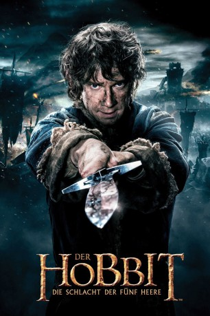

Auszeichnungen: für 1 Oscars nominiert
 gesehen am 01.11.2015
gesehen am 01.11.2015Alternativ: The Hobbit: The Battle of the Five Armies (Englischer Titel)
Auszeichnungen: für 1 Oscars nominiert gesehen am 01.11.2015
 
 IMDB-Wertung: 7.4 / 10
IMDB-Wertung: 7.4 / 10  Metascore:
Metascore: 
Nachdem Smaug besiegt wurde, sitzt Thorin endlich auf dem Zwergenthron und hat sein Reich wieder. Doch der Kampf gegen den Drachen hat Spuren hinterlassen. Die Stadt Esgaroth wurde zerstört, ihre Bewohner sind nun obdachlos. Doch Thorin verweigert jede Hilfe genauso wie die Rückgabe von Teilen des Schatzes, die Smaug gestohlen hatte. Hobbit Bilbo versucht zwischen Zwergen, Elben und den Bürgern zu vermitteln, doch vergeblich. Thorin hält ihn für einen Verräter und auch Gandalf kann nichts mehr ausrichten. Es wird aufgerüstet und bald stehen sich die Armeen gegenüber…
Jahr: 2014
Dauer: 144 Minuten
FSK: 12
Land: Neuseeland Studio: Warner Bros.Tonspuren: DTS - ,
Untertitel: Deutsch, Englisch,
Auflösung: 1080p (1920x800) Größe: 12697 MB
Regisseur:  Peter Jackson
Peter Jackson
Drehbuch: Fran Walsh, Philippa Boyens, Peter Jackson, Guillermo del Toro, J.R.R. Tolkien
Soundtrack: Howard Shore
Darsteller:
 Ian McKellen als Gandalf
Ian McKellen als Gandalf Martin Freeman als Bilbo Baggins
Martin Freeman als Bilbo Baggins Richard Armitage als Thorin
Richard Armitage als Thorin Ken Stott als Balin
Ken Stott als Balin Graham McTavish als Dwalin
Graham McTavish als Dwalin William Kircher als Bifur
William Kircher als Bifur James Nesbitt als Bofur
James Nesbitt als Bofur Stephen Hunter als Bombur
Stephen Hunter als Bombur Dean O'Gorman als Fili
Dean O'Gorman als Fili Aidan Turner als Kili
Aidan Turner als Kili John Callen als Oin
John Callen als Oin Jed Brophy als Nori
Jed Brophy als Nori Mark Hadlow als Dori
Mark Hadlow als Dori Adam Brown als Ori
Adam Brown als Ori Orlando Bloom als Legolas
Orlando Bloom als Legolas Evangeline Lilly als Tauriel
Evangeline Lilly als Tauriel Lee Pace als Thranduil
Lee Pace als Thranduil Cate Blanchett als Galadriel
Cate Blanchett als Galadriel Hugo Weaving als Elrond
Hugo Weaving als Elrond Christopher Lee als Saruman
Christopher Lee als Saruman Ian Holm als Old Bilbo
Ian Holm als Old Bilbo Benedict Cumberbatch als Smaug / Necromancer
Benedict Cumberbatch als Smaug / Necromancer Mikael Persbrandt als Beorn
Mikael Persbrandt als Beorn Sylvester McCoy als Radagast
Sylvester McCoy als Radagast Luke Evans als Bard
Luke Evans als Bard Stephen Fry als Master of Laketown
Stephen Fry als Master of Laketown John Bell als Bain
John Bell als Bain Manu Bennett als Azog
Manu Bennett als Azog John Tui als Bolg
John Tui als Bolg Billy Connolly als Dain
Billy Connolly als Dain Mark Mitchinson als Braga
Mark Mitchinson als Braga Nick Blake als Percy
Nick Blake als Percy Conan Stevens als Keeper of the Dungeons
Conan Stevens als Keeper of the Dungeons Dee Bradley Baker als Creature Voices
Dee Bradley Baker als Creature Voices Debra Wilson als Creature Voices
Debra Wilson als Creature Voices Peter Jackson als Bilbo's Father on Picture , uncredited
Peter Jackson als Bilbo's Father on Picture , uncredited Joseph Mika-Hunt als Laketowner , uncredited
Joseph Mika-Hunt als Laketowner , uncredited Shane Rangi als Laketown Refugee , uncredited
Shane Rangi als Laketown Refugee , uncreditedDatei: X:\6-Hexalogie(A-Z)\Herr der Ringe - Hobbit\Hobbit 3 - Die Schlacht der fünf Heere (2014, FSK12, 1920x800).mkv seit 21.02.2015
Festplatte: HD Collection-3(N-Z)-6(A-Z)
 Es gibt insgesamt 12 Filme in der Gruppe '6-Hexalogie(A-Z)\Herr der Ringe - Hobbit'
Es gibt insgesamt 12 Filme in der Gruppe '6-Hexalogie(A-Z)\Herr der Ringe - Hobbit'